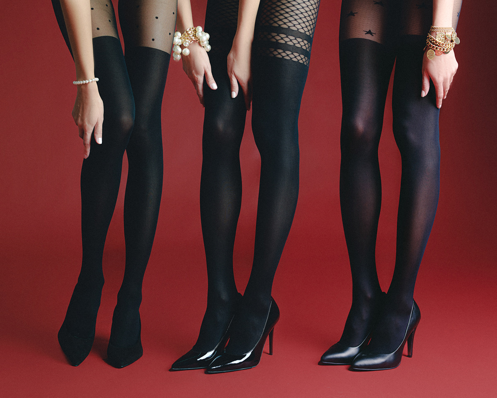

Рассмотреть крупно ↗Визуальная коллекция
Рисунок.
Свет.
Характер.
Сетка, горошек и имитация чулок. Прозрачность, которая меняется в свете. Выразительные фотографии и детали, к которым хочется присмотреться.
Выбрать свой ракурс ↓Кадр предоставлен владельцем ТОНКО. Автор и исходная публикация пока не установлены.
Сохранённое доступно в этом браузере.
В этой подборке пока нет фотографий.